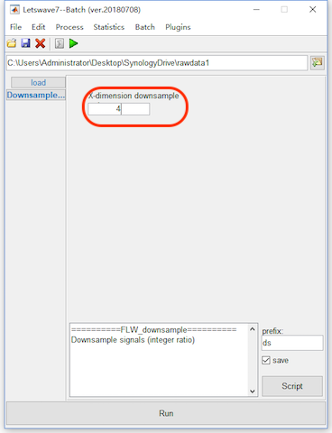
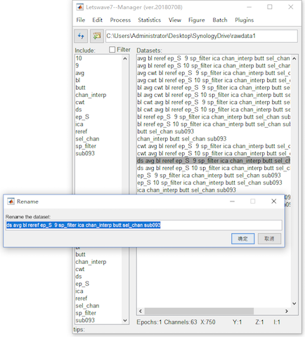
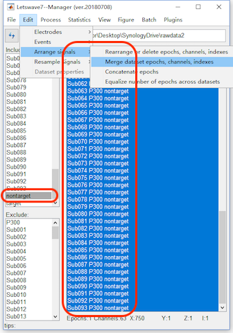
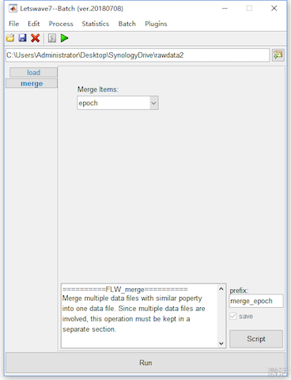
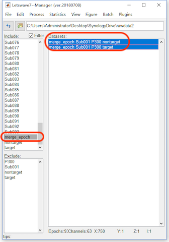
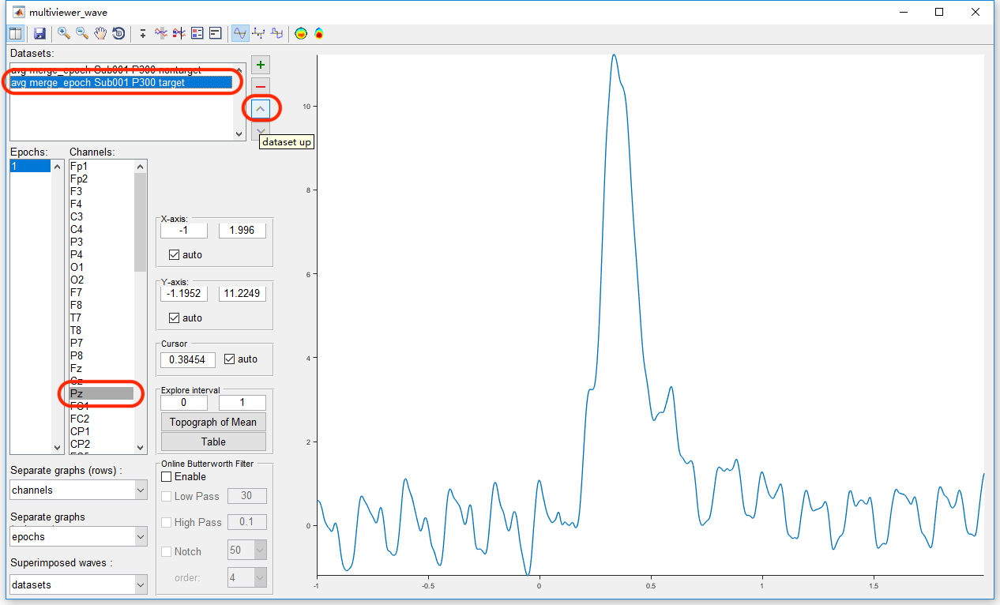
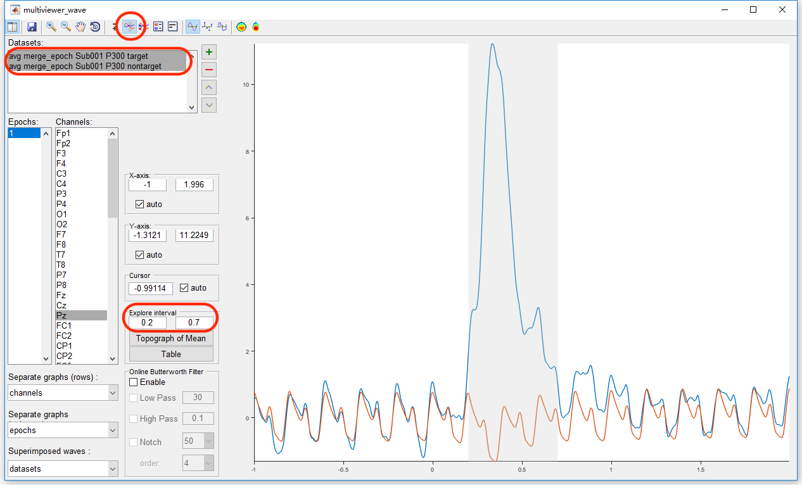
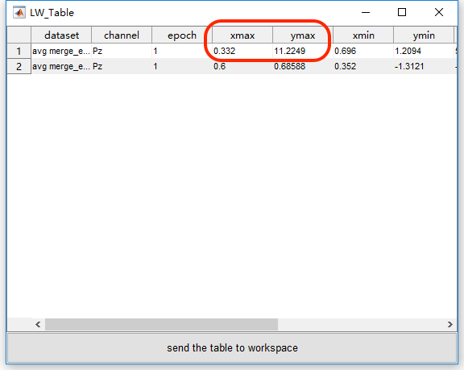
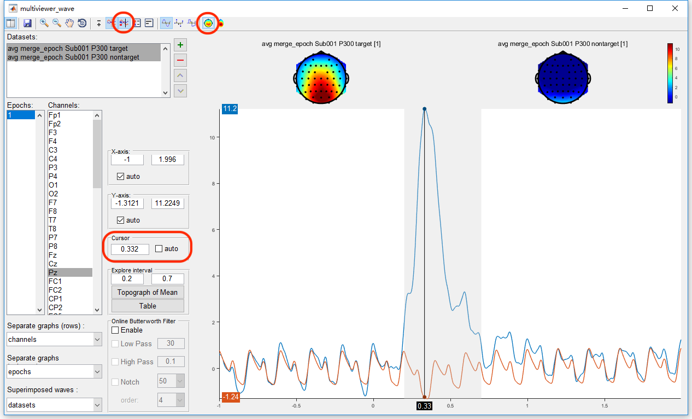
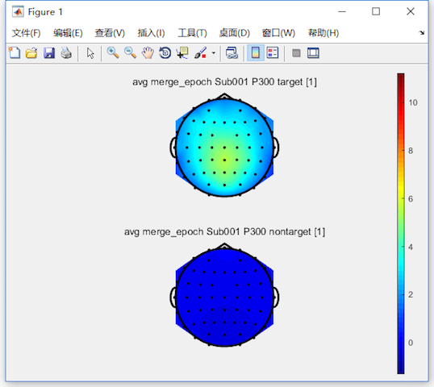

Step 1: Downsampling
Considering the size of the example dataset for uploading and downloading, we downsample the datasets from 1000Hz to 250Hz.
Select datasets “avg bl reref ep_S 9 sp_filter ica chan_interp butt sel_chan sub093” and “avg bl reref ep_S 10 sp_filter ica chan_interp butt sel_chan sub093” and select “Edit->Resample Signals->Downsample signals (integer ratio)”. In the batch module, set the down sampling ratio to 4. Click the button Run for down sampling. Two new datasets with the name “ds avg bl reref ep_S 9 sp_filter ica chan_interp butt sel_chan sub093” and “ds avg bl reref ep_S 10 sp_filter ica chan_interp butt sel_chan sub093” will be appeared in the data list of the manager module.

Step 2: Dataset Rename
In the single subject analysis, we show the process of time domain analysis and time frequency analysis step by step. For each step, there would be new datasets generated with a prefix. In result, the final result of the time domain analysis would be “ds avg bl reref ep_S 9 sp_filter ica chan_interp butt sel_chan sub093” and “ds avg bl reref ep_S 10 sp_filter ica chan_interp butt sel_chan sub093”, which shows the basic information of the processing but would be too long for displaying. Hence, before the multiple subjects analysis, we need to rename the datasets.
Select the dataset “ds avg bl reref ep_S 9 sp_filter ica chan_interp butt sel_chan sub093” and press the rename in the right-clicked menu. Rename the dataset “ds avg bl reref ep_S 9 sp_filter ica chan_interp butt sel_chan sub093” to “Sub093 P300 target”. With the similarly, rename the dataset “avg bl reref ep_S 10 sp_filter ica chan_interp butt sel_chan sub093” to “Sub093 P300 nontarget”.

Step 3: Datasets Copy and Merge
For the multiple subjects analysis, we need to copy the time domain analysis results into to a new folder. For example, the datasets in the folder rawdata2 is all the 93 subjects time domain analysis result, which can be downloaded here (33M). Unzip the rawdata2.zip file, there are 93 datasets in 93*2 files.
In the single subject analysis, the result is the average of all the trials for target and nontarget epochs. For multiple subjects analysis, we need firstly to merge the datasets from 93 subjects into one dataset, in which each subject in the new dataset is treated as an epoch. Select the tag “nontarget” in the include list box from the left part of the manager module, and select all the datasets in the dataset list box in the right part of the manager module. Select “Edit->Arrange signals->Merge dataset epochs, channels, indexes”. Keep the default setting in the batch module, and click the button Run to merge all the selected datasets in the condition of nontarget.


In the same way, we can merge all the datasets in the condition of target, in which we should select the tag “target” in the include list box from the left part of the manager module.
In result, the two new datasets, with 93 epochs for each, “merge_epoch Sub001 P300 nontarget” and “merge_epoch Sub001 P300 target”, which contain the time domain analysis results from 93 subjects in the conditions of “target” and “nontarget”.
Step 4: Grand Average
Select the tag “merge_epoch” in the include list box from the left part of the manager module, and select all the datasets in the dataset list box in the right part of the manager module. Similar with the averaging operation in the single subject level, select Process->Average->Compute average, std, median across epochs. Keep the default setting in the batch module, and click the button Run to average all the epochs in the two datasets, which is actually run the grand average for all the subjects in the conditions of target and nontarget. Two new datasets with the name “avg merge_epoch Sub001 P300 nontarget” and “avg merge_epoch Sub001 P300 target” will be appeared in the data list of the manager module.

Step 5: View the Result
To view the result of grand average, select the two datasets “avg merge_epoch Sub001 P300 nontarget” and “avg merge_epoch Sub001 P300 target”, and click the view in the right-click menu. In the multiviewer for the waveform, select channel Pz, to see the results with the same order as it is in the single subject level, we need to change the order of the datasets. Select the dataset “avg merge_epoch Sub001 P300 target” and click the button “dataset up”.

Select both the two datasets, and enable the interval selection button in the toolbar. Select the interval parameters for 0.2 to 0.7 seconds and click the “Table” button, the table for the statistic of maximum, minimum and mean value is popped up, in which we find the peak of the P300 component is 11.22 µV, happened at the 332 ms.


Enable the cursor and the 2D topography in the toolbar, and set the location of the cursor to be 0.332. The grand average topography of the P300 experiment can be seen in both the conditions of target and nontarget at the peak time point of the P300 component.

